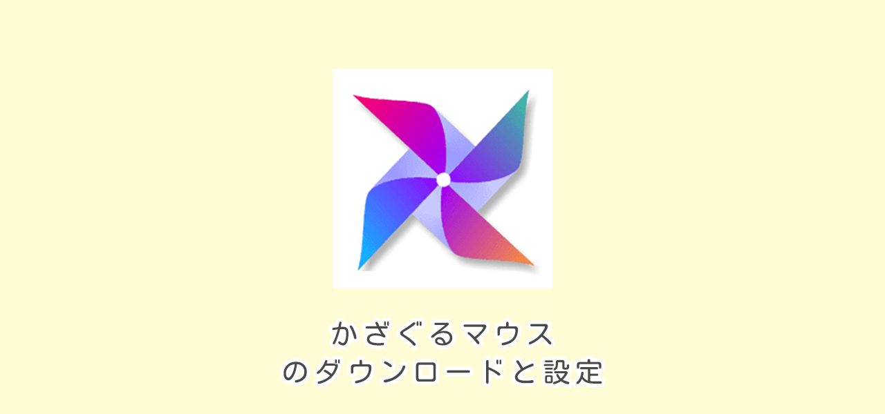
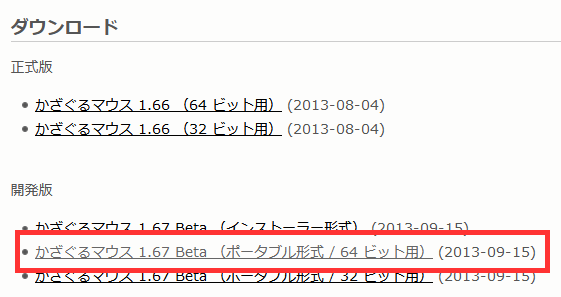
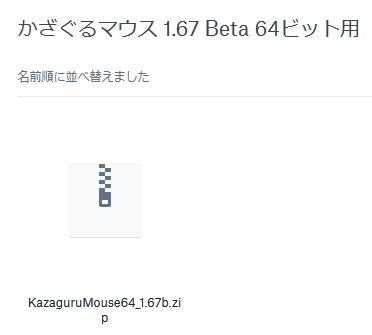
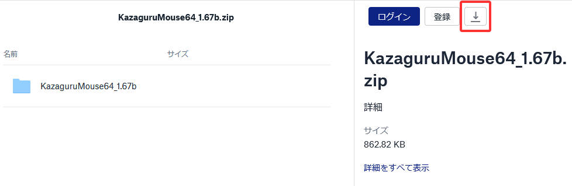
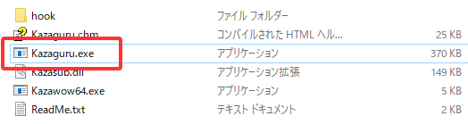
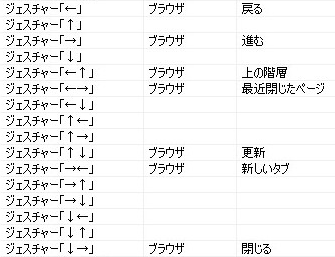
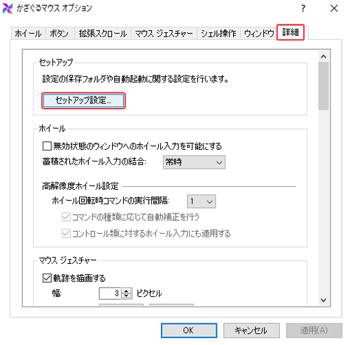
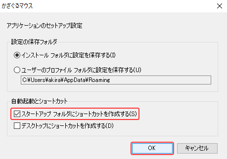

かざぐるマウスのダウンロードと設定
2022/03/13

この記事の目次
マウスジェスチャーとは
- マウスジェスチャーとはマウスを使った操作のことです
- キーボードのショートカットのような操作がマウスの動きで操作できます
かざぐるマウスのダウンロード
手順１

かざぐるマウスを入手します。
ダウンロードサイト
「開発版 かざぐるマウス1.67 Beta 64ビット用」をクリックします
手順２

「KazaguruMouse64_1.67b.zip」をダブルクリックしてファイルを展開します。
手順３

「ダウンロードボタン」をクリックしてファイルをダウンロードします。
手順４

exeファイルをダブルクリックして起動します。
これで完成です！

かざぐるマウスの設定
その１ ジェスチャーの設定

この画像のように設定すると使いやすいです。
その２の１ Windowsの立ち上げと同時に起動させる

オプションの「詳細」タブからセットアップの項目にある「セットアップ設定」をクリックします。
その２の２

「スタートアップ フォルダにショートカットを作成する」にチェックを入れて「OKボタン」をクリックします。
これで完成です！